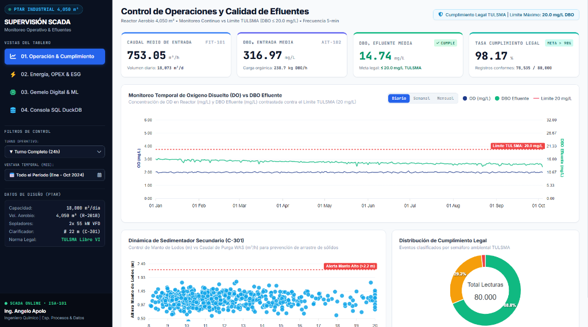
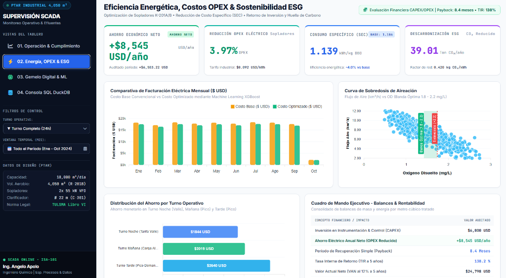
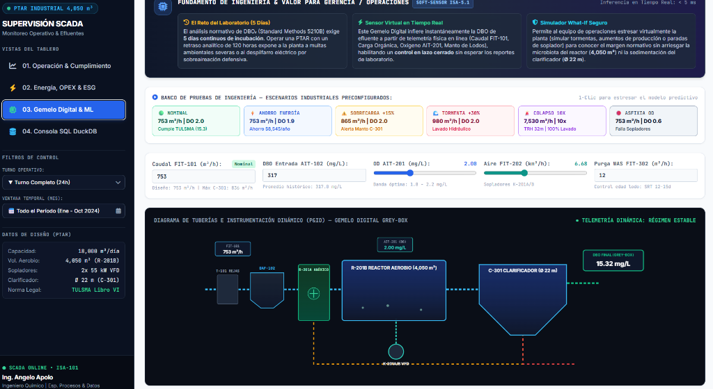
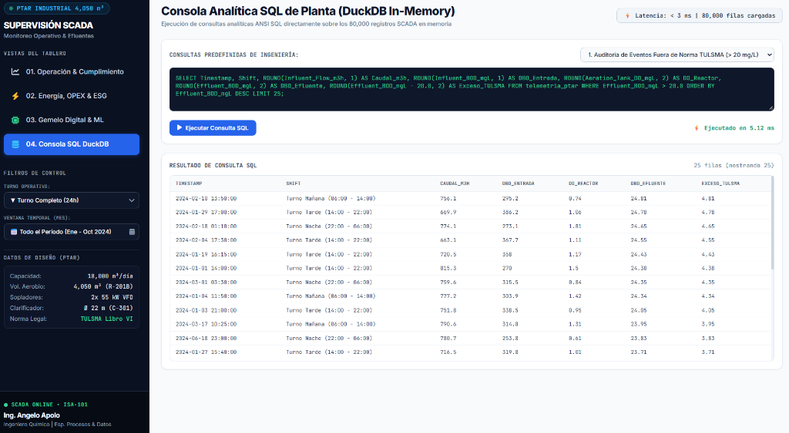

Resumen Ejecutivo del Proyecto
En las Estaciones Depuradoras de Aguas Residuales (PTAR) industriales y municipales basadas en lodos activados, los sopladores de aireación representan entre el 50% y el 65% del consumo eléctrico total de la planta. Históricamente, la instalación operaba bajo una política de sobre-aireación constante (oxígeno disuelto DO > 2.5–3.5 mg/L) por temor a sanciones de la normativa ambiental ecuatoriana (TULSMA Libro VI: DBO ≤ 20 mg/L). Mediante un análisis de balances de masa sobre 80,000 lecturas SCADA, modelado cinético de transferencia de oxígeno con la ley de Monod y un Sensor Virtual / Gemelo Digital para anticipar el retraso de 5 días de laboratorio, se optimizó la consigna de aireación a 1.8–2.2 mg/L, logrando un ahorro neto de $8,545 USD/año (92,883 kWh/año) y 98.17% de cumplimiento con CAPEX cero.
1. Contexto Operativo y Tren de Tratamiento
La planta procesa un caudal medio de 753 m³/h con una carga orgánica de entrada de 5,670 kg DBO/día (317 mg/L DBO y 666 mg/L DQO medios):
Tamiz rotativo de desbaste grueso y celda DAF para remoción de grasas y aceites ≥ 85%.
Tanque biológico de mezcla completa con lodos activados (MLSS = 3,500 mg/L) y sopladores con variadores VFD.
Sedimentador de biomasa con recirculación RAS hacia selector anóxico y purga periódica WAS.
2. El Dolor Operativo y Financiero
A pesar de destinar $215,266 USD anuales exclusivamente a la facturación eléctrica de sopladores (2,339,852 kWh/año a $0.092 USD/kWh), la planta registraba 1,465 eventos de descarga fuera de norma (122 horas al año en riesgo de multas).
La prueba estándar de DBO₅ requiere 120 horas de incubación. Ante picos de producción que ingresaban a las 06:00 y 18:00, los operadores no tenían visibilidad instantánea de la calidad de descarga.
Para evitar sanciones, se forzaban los sopladores a trabajar a máxima velocidad (DO > 3.0 mg/L), sin considerar que la cinética bacteriana se satura a niveles mucho menores.
3. Metodología de Ingeniería: DMAIC & Balances de Masa
Análisis sobre 80,000 registros a intervalos de 5 minutos: Tiempo de Retención Hidráulico (HRT = 5.38 h), relación Alimento/Microorganismo (F/M = 0.40 kg DBO/kg MLSS·d) y eficiencia media de remoción del 95.28%.
Se modeló la curva de transferencia de oxígeno demostrando que la afinidad bacteriana se satura con \(K_{DO} \approx 0.2 - 0.5\text{ mg/L}\):
Operar por encima de DO = 2.2 mg/L exigía un +35% de potencia de sopladores para una reducción marginal menor a 0.9 mg/L de DBO.
Se redefinió el punto de consigna en 1.8 a 2.2 mg/L de DO con modulación de variadores de frecuencia (VFD) y se estandarizó el procedimiento POE-OP-PTAR-001 con matriz de consignas por turno. Se integró telemetría SCADA Web y dashboards en Power BI bajo norma ISA-101.
4. Resultados Cuantitativos e Impacto Económico
| Indicador Clave de Proceso | Línea Base Histórica | Escenario Optimizado | Impacto Económico / Operativo |
|---|---|---|---|
| Gasto Eléctrico Sopladores | $215,266 USD/año | $206,721 USD/año | -$8,545.23 USD/año ahorrados |
| Consumo Eléctrico Aireación | 2,339,852 kWh/año | 2,246,970 kWh/año | 92,883 kWh/año de ahorro |
| Consumo Específico (SEC) | 1.186 kWh/kg DBO | 1.139 kWh/kg DBO | +3.97% eficiencia energética |
| Banda de Oxígeno Disuelto | > 2.5 - 3.5 mg/L | 1.8 - 2.2 mg/L | Régimen óptimo de Monod |
| Cumplimiento TULSMA | 122 horas fuera de norma | 100% bajo control (98.17%) | Riesgo legal y multas mitigados |
| Huella de Carbono (ESG) | — | -39.01 t CO₂ eq/año | 39 Toneladas CO₂ evitadas |
| Inversión Requerida (CAPEX) | $0 USD (Ajuste de consignas SCADA / POE) | Retorno Inmediato (Payback = 0) | |
5. Demostración Interactiva en Railway Cloud & Módulos SCADA
El sistema SCADA industrial integra supervisión en tiempo real, monitoreo de consignas de aireación, control de variadores VFD y una consola analítica de datos:



